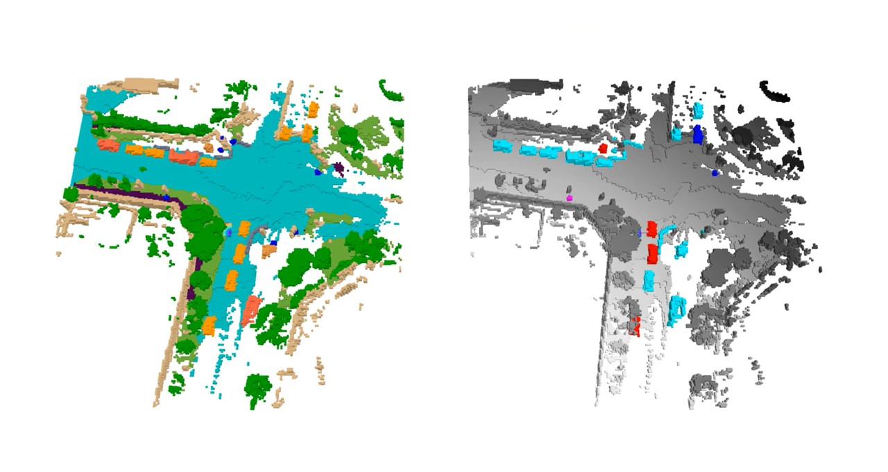
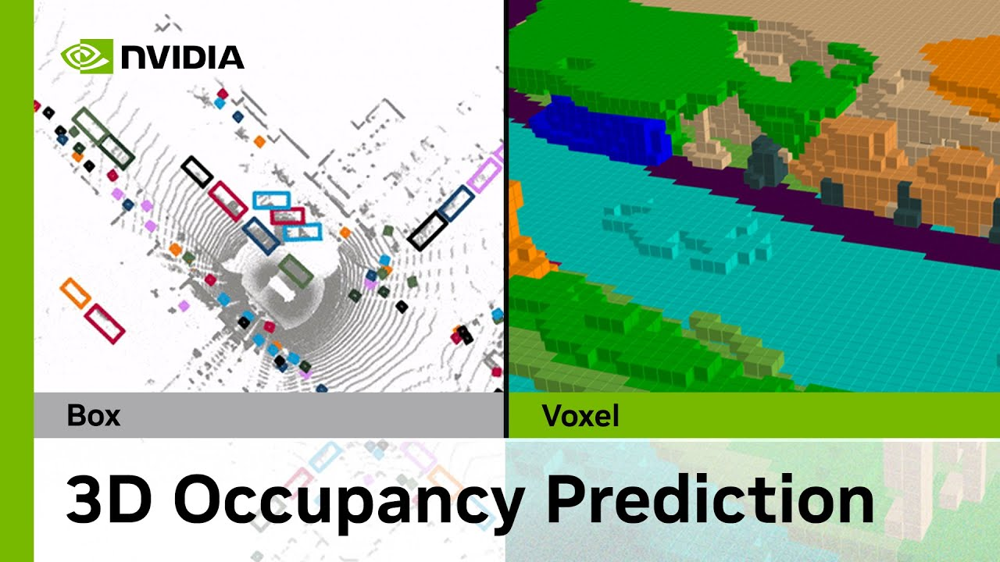

NVIDIAは来週、カナダのバンクーバーで開催されるコンピュータビジョンとパターン認識の国際会議（CVPR）において、自動運転開発向けの3D占有予測チャレンジで激戦を制した優勝者として表彰される。
このコンテストには10地域から約150チームが参加し、400件以上の応募が集まった。
3D占有予測とは、シーン内の各ボクセル、すなわち3Dバードアイビューグリッド上の各データポイントの状態を予測するプロセスである。ボクセルは「空き」「占有」「不明」のいずれかに分類される。
3D占有予測に関するNVIDIA DRIVE Labsの動画をご覧ください：

3D占有グリッド予測は、自動運転システムの安全で堅牢な開発において不可欠であり、NVIDIA DRIVEプラットフォームによって実現される最先端の畳み込みニューラルネットワーク（CNN）およびTransformerモデルを用いて、自律走行車（AV）の計画・制御スタックに情報を提供する。
「NVIDIAの受賞ソリューションには、AVにおける2つの重要な技術的進歩が含まれています」と、NVIDIAで学習と知覚を担当するシニアリサーチサイエンティストのZhiding Yu氏は述べた。「このソリューションは、優れたバードアイビュー知覚をもたらす最先端のモデル設計を実証しています。また、最大10億パラメータを持つビジュアル基盤モデルと大規模な事前学習が3D占有予測に有効であることも示しています。」
自動運転における知覚は、画像内の物体や空き空間の検出といった2Dタスクの処理から、複数の入力画像を用いて3Dで世界を推論するへと、ここ数年で大きく進化してきた。
これにより、複雑な交通シーン内の物体について柔軟かつ精密な細粒度の表現が可能となり、「自動運転に必要な安全な知覚要件を達成するために不可欠だ」とNVIDIAのAV応用研究ディレクター兼ディスティングイッシュドサイエンティストのJose Alvarez氏は述べている。
Yu氏は、NVIDIAリサーチチームの受賞作を、6月18日（日）太平洋時間午前10時20分のCVPRエンドツーエンド自動運転ワークショップと、6月19日（月）太平洋時間午後4時のビジョン中心型自動運転ワークショップで発表する予定だ。
チャレンジで1位を獲得したことに加え、NVIDIAはイベントにおいてイノベーション賞も受賞する予定だ。この賞は、CVPRワークショップ委員会によれば、「ビュー変換モジュールの開発に対する斬新な洞察」と、従来アプローチと比較して「大幅に向上したパフォーマンス」を評価するものだ。
従来の3D物体検出——シーン内の物体を検出し、3Dバウンディングボックスで表現すること——はAV知覚における中核的なタスクだが、その限界もある。たとえば、表現力に乏しく、バウンディングボックスが十分なリアルワールド情報を表現できない場合がある。また、トラックから落下した道路上の危険物など、現実世界で稀にしか登場しない物体も含め、あらゆる可能性のある物体についてタクソノミーとグランドトゥルースを定義する必要がある。
これに対し、3D占有予測はエンドツーエンドの自動運転に不可欠な、自動運転車の計画スタックに対する豊富な世界情報を提供する。
ソフトウェア定義型車両は、時間をかけて実証・検証された新たな開発によって継続的にアップグレードできる。CVPRで認められたような研究イニシアティブから生まれる最先端のソフトウェアアップデートが、新たな機能とより安全な走行能力を実現している。
NVIDIA DRIVEプラットフォームは、自動車メーカーに量産への道筋を提供し、車内からデータセンターまで安全でセキュアなAV開発のためのフルスタックのハードウェアとソフトウェアを提供している。
CVPRにおける3D占有予測チャレンジでは、推論時にカメラ入力のみを使用するアルゴリズムの開発が参加者に求められた。参加者はオープンソースのデータセットとモデルを使用でき、データ駆動型アルゴリズムや大規模モデルの探求が促進された。主催者は、実際のシナリオにおける最先端の3D占有予測アルゴリズムのためのベースラインサンドボックスを提供した。
NVIDIAはCVPRで約30本の論文・発表を行う。自動運転について議論する専門家には以下の方々が含まれる：
その他の講演のアジェンダをご覧いただき、6月18〜22日に開催されるCVPRにおけるNVIDIAの取り組みについて詳しくご確認ください。
Featured imageはOccNetおよびOcc3Dの提供による。